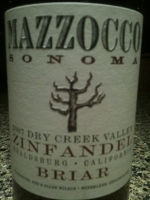

|
North America >
USA >
California >
Sonoma County >
Mazzocco Sonoma >
Dry Creek Valley Zinfandel Briar
2007 Dry Creek Valley Zinfandel Briar
Mazzocco Sonoma
Healdsburg, CA

From a 14 acre estate. Winemaker Antoine Favero aged in French oak for 18 months.
600 cases produced.
16.2% alcohol
750 ml

2009 tasting - A dark, blackish red, this wine has a fruity bouquet exhibiting the Dry Creek terroir. It is young for a Zinfandel, with a slightly chewy flavor coupled to a spicy finish.
More about Zinfandel.
|
|